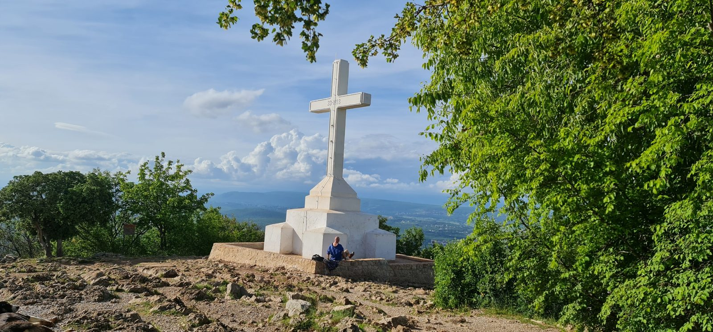
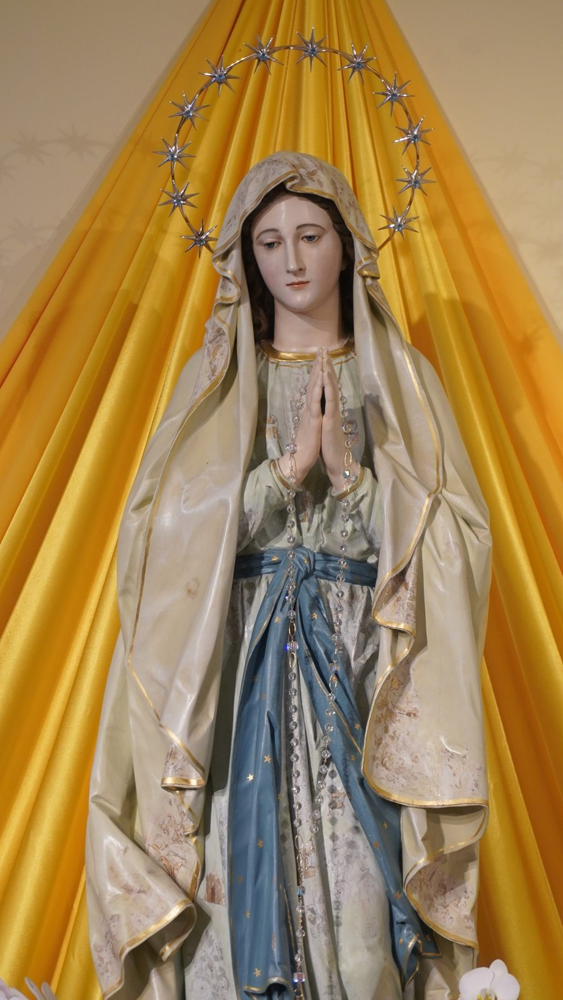
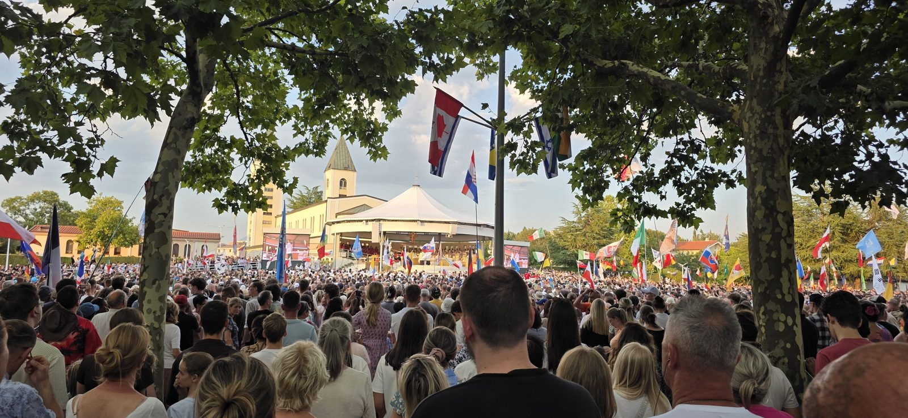

Friede
„Friede muss herrschen zwischen Gott und den Menschen und unter den Menschen.“

Medjugorje
Seit dem 24. Juni 1981 kommen Millionen Menschen in dieses kleine Dorf in der Herzegowina, um zu beten, zu beichten und Frieden zu finden.
Als ich 1985 zum ersten Mal nach Medjugorje kam, hätte ich mir nicht vorstellen können, dass die Muttergottes uns Jahrzehnte später noch immer zu Umkehr, Gebet, Fasten und Versöhnung mit Gott und den Menschen aufruft.
Pater Slavko Barbarić, der die Seher viele Jahre begleitet hat, sagte einmal: „Die Muttergottes ist nicht vom Himmel gekommen, um Spaß mit uns zu machen!“ Gerade heute, wo viele Menschen angstvoll nach ihrer Zukunft fragen, möchte ich diesen Ruf weitergeben.
Reiner Wettcke
Das Geschehen
24. Juni · Der erste Tag
Gegen 18 Uhr sehen sechs junge Menschen am Hügel Podbrdo eine wunderschöne junge Frau mit einem Kind auf dem Arm. Sie winkt sie heran, doch die Jugendlichen haben Angst.
25. Juni · Die sechs Seher
Ivanka, Mirjana, Vicka, Ivan, Marija und Jakov kehren zurück, beten mit der Gottesmutter und sprechen mit ihr. Seitdem gilt dieser Tag als Jahrestag der Erscheinungen.
26. Juni · „Friede, Friede, Friede“
Auf die Frage nach ihrem Namen antwortet sie: „Ich bin die heilige Jungfrau.“ Auf dem Rückweg hört Marija die Botschaft, die zum Kern von Medjugorje wird: Friede zwischen Gott und den Menschen.
27. und 28. Juni · Tausende Menschen
Die Gottesmutter ruft zu festem Glauben und Gebet auf. Am Abend des 28. Juni sind schon rund 15.000 Menschen am Berg. „Selig, die nicht sehen und doch glauben.“
29. Juni · Untersuchung und Heilung
Ärzte in Mostar bestätigen: Die Kinder sind gesund. Am selben Tag wird die kleine Daniela Šetka nach dem Gebet ihrer Eltern geheilt.
30. Juni und danach · Verbot und Kirche
Die Behörden sperren den Berg. Die Erscheinungen gehen in Häusern, auf Feldern und schließlich in der Pfarrkirche weiter, wo Pilger Rosenkranz und Heilige Messe mitfeiern.
Die Botschaften
So viele Botschaften es seit 1981 gab: Sie lassen sich in fünf Themen zusammenfassen. Der Friede ist das Ziel, Glaube, Umkehr, Gebet und Fasten sind der Weg dorthin.
„Friede muss herrschen zwischen Gott und den Menschen und unter den Menschen.“
Ohne Glauben kein Frieden. Der Glaube ist unsere Antwort auf Gottes Wort.
Ein gereinigtes Herz, vor allem durch die regelmäßige Beichte.
„Betet ohne Unterlass“, besonders die Heilige Messe und den Rosenkranz.
Mittwochs und freitags fasten macht frei für Gott und den Nächsten.
„Liebe Kinder! Das Feuer des Hasses und der Kriege breitet sich in den Herzen der Menschen aus, die keinen Frieden wollen, sondern ihre eigenen …“
(mit kirchlicher Erlaubnis)
Weiterlesen„Liebe Kinder! Möge diese Zeit eine Zeit des Gebetes für den Frieden sein. Ich rufe euch auf, in euren Familien das Rosenkranzgebet in meinen …“
(mit kirchlicher Erlaubnis)
Weiterlesen„Liebe Kinder! Heute rufe ich euch auf: Kehrt zu Gott zurück, kehrt zum Gebet zurück, damit ihr Träger des Friedens werdet. Betet, meine lieben …“
(mit kirchlicher Erlaubnis)
Weiterlesen
Haltung der Kirche
Papst Franziskus erlaubt offiziell organisierte Pilgerfahrten nach Medjugorje.
Am 19. September erteilt das Dikasterium für die Glaubenslehre mit Zustimmung des Papstes das „Nihil obstat“: Die geistlichen Früchte von Medjugorje sind positiv, Gläubige dürfen den Ort ausdrücklich verehren und besuchen. Über die Übernatürlichkeit der Erscheinungen selbst urteilt die Kirche damit nicht.
Alle Botschaften auf dieser Seite veröffentlichen wir unter dem Vorbehalt des abschließenden Urteils der Katholischen Kirche.
Geschichte des Ortes
Illyrische Burgruinen („gradine“) und Reste einer römischen Straße zeugen von früher Besiedlung.
Kroaten besiedeln das Gebiet und nehmen früh das Christentum an. Kunstvolle Grabsteine („stećci“) stammen aus dem Mittelalter.
Unter osmanischer Herrschaft halten die Franziskaner trotz Verfolgung den Glauben der Menschen lebendig.
Die Pfarrei Medjugorje wird gegründet und bis heute von herzegowinischen Franziskanern betreut.
Zwei Weltkriege und die kommunistische Herrschaft bringen Armut und Unterdrückung des Glaubens.
Die Erscheinungen beginnen. Selbst im Krieg der 1990er-Jahre reißt der Pilgerstrom nie ganz ab, viele Pilger bringen Hilfe mit.
Die Orte

